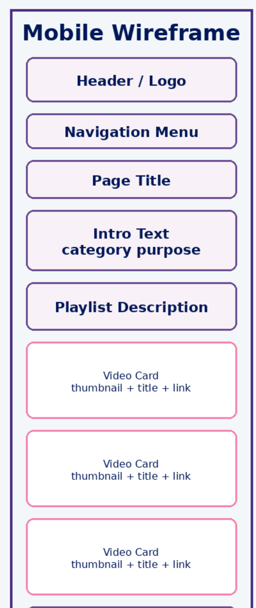
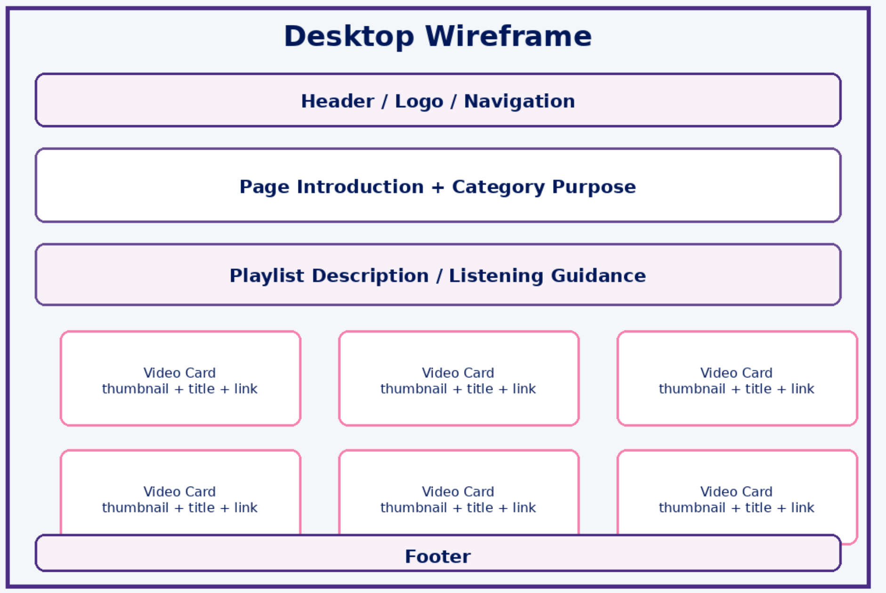

Site Name
ANA Violin Studio Listening Library
This name builds upon my original ANA Violin Studio website and reflects the expanded listening library designed to help students explore violin repertoire through curated listening experiences.
Site Purpose
The purpose of this website is to provide violin students with an organized listening library that encourages exploration of violin repertoire.
The site expands the existing Listen & Explore page by adding three new listening categories:
- Chamber Works
- Solo Works
- Symphonic Works
Each page will use the YouTube Playlist API to dynamically display curated playlists and help students discover new repertoire.
Scenarios
- What solo violin works should I listen to as I advance as a violin student?
- Where can I find examples of chamber music that feature the violin?
- How can I explore violin concertos and orchestral repertoire from one organized resource?
Color Schema
- Primary Purple: #4b2e83
- Secondary Purple: #6a4c93
- Light Background: #f8f1f7
- Soft Blue: #c7d0e6
- Background: #f3f7f9
- Accent Pink: #f582ae
- Main Text: #001858
- Secondary Text: #172c66
Typography
Satisfy will be used for headings and titles to maintain the elegant and artistic branding of the violin studio.
Poppins will be used for body text, navigation, playlist descriptions, and dynamically loaded API content because it is clean and easy to read.
Wireframe
The following wireframes show the planned layout for the expanded listening library pages.
- Chamber Works Page
- Solo Works Page
- Symphonic Works Page
Mobile View

Desktop View
